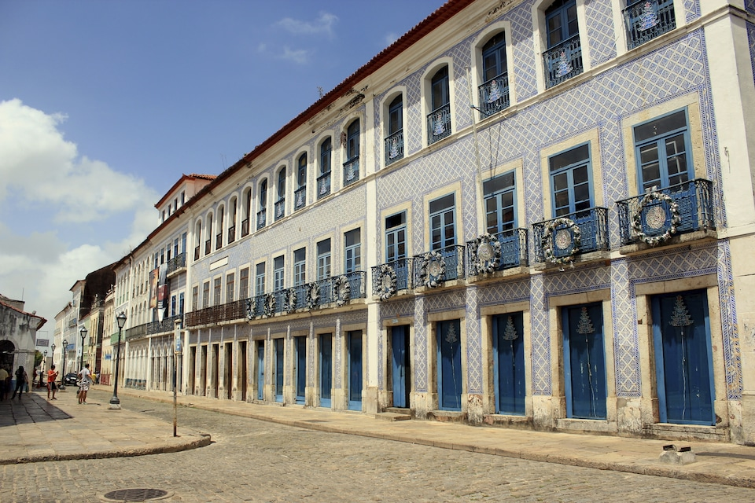
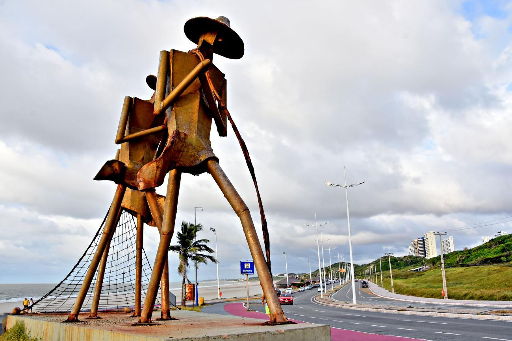

Historia
São Luís do Maranhão é um município brasileiro e a capital do estado do Maranhão. É a única cidade brasileira fundada por franceses, no dia 8 de setembro de 1612, posteriormente invadida por holandeses e por fim colonizada pelos portugueses. Localiza-se na ilha de Upaon-Açu no Atlântico Sul, entre as baías de São Marcos e São José de Ribamar, no Golfão Maranhense. Em 1621 quando o Brasil foi dividido em duas unidades administrativas — Estado do Maranhão e Estado do Brasil — São Luís foi a capital da primeira unidade administrativa. No ano de 1997 o centro histórico da cidade foi declarado patrimônio cultural da humanidade pela UNESCO.
Informaçoes Geográficas
Com uma população estimada em 1 108 975 habitantes, São Luís é o município mais populoso do Maranhão e o quarto da Região Nordeste. Sua área é de 831,7 km², desse total 283 km² estão em perímetro urbano (12ª maior área urbana do país). O município é sede da Região de Planejamento da Ilha do Maranhão (composta pelos 4 municípios localizados na ilha de Upaon-Açu) e da Região Metropolitana de São Luís composta por 13 municípios que totalizam 1.633.117 habitantes. O Índice de Desenvolvimento Humano (IDH) de São Luís, segundo dados das Nações Unidas datados do ano 2010, é de 0,768 acima da média brasileira, o 3ª melhor IDH entre as capitais da região Nordeste do Brasil, e 4ª entre todos os 1.794 municípios da região.
Industrial
A capital maranhense tem um forte setor industrial por conta de grandes corporações e empresas de diversas áreas que se instalaram na cidade pela sua privilegiada posição geográfica entre as regiões Norte e Nordeste do país. Seu litoral estrategicamente localizado bem mais próximo de grandes centros importadores de produtos brasileiros como Europa e Estados Unidos, permite economia de combustíveis e redução no prazo de entrega de mercadorias provenientes do Brasil pelo Porto de Itaqui, que é o segundo mais profundo do mundo e um dos mais movimentados e bem estruturados para o comércio exterior no país.